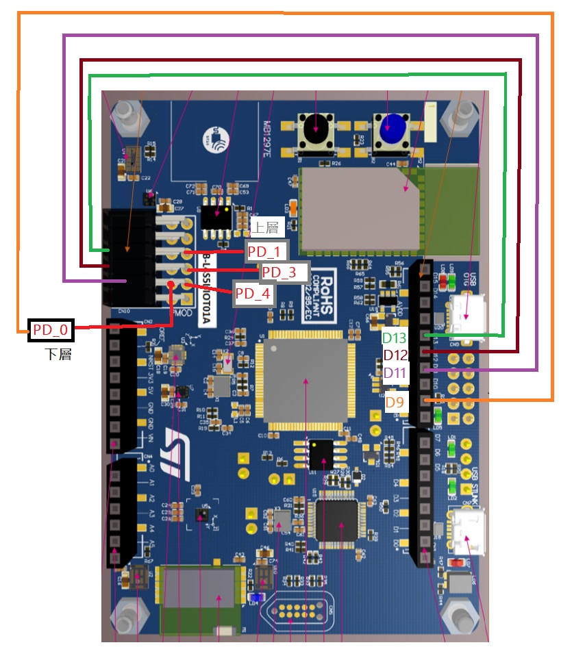
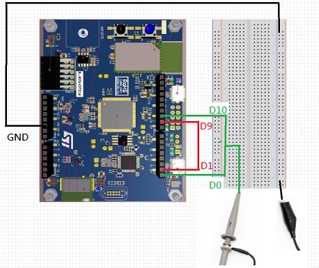

Contents
The goal of this lab is to learn:
- Use UART to communicate between two boards
- Use I2C to get access to slave module
1 Lab Due
Mar. 23, 2022
2 Lab Introduction
This lab introduces mbed objects about serial communication: SPI, BufferedSerial and I2C. BufferedSerial, usually called UART or RS-232, is a generic protocol used by computers and electronic modules to send and receive control information and data. The UART serial link has two uni-directional asynchronous channels (wires), one for sending and one for receiving. Note that both ends of the serial links must be configured with the same settings (packet format and baud rate, etc.).
SPI interface is a synchronous interface (with a MISO, a MOSI, and a clock) to serially transfer data between a master and a slave device. The transfer is like connecting two shift registers (of both master and slave): output from a master's shift register is connected to slave shift register input (MOSI), and also the slave's shift register output is connected to master's input (MISO). Therefore, with two data wires and a clock, we can transfer data between master and slave. SPI can provide a speed of 60M bps for applications.
The I2C interface also provides a synchronous serial channel between masters and slaves. The I2C has only one data wire and one clock. The data wire will be used in either write or read mode. The I2C also include an addressing protocol. I2C usually connects micro-controllers to on-board sensors at low-cost and low-speed (1-5M bps).
3 Equipment List
- B_L4S5I_IOT01A * 1
- Breadboard * 1
- Picoscope * 1
- TextLCD * 1
4 Lab Description
4.1 Lecture Notes
- Chapter 8: Serial Communication ch8_serial.pdf
4.2 mbed SPI Self Loopback
Use the following SPI pins to connect loop back between two SPI interfaces on the board. Note that "PD" pins are at the PMOD connector.
Use SPI1_MOSI(D11)、SPI1_MISO(D12)、SPI1_SCK(D13)、SPI1_CS(D9)、SPI2_MOSI(PD_4)、SPI2_MISO(PD_3)、SPI2_SCK(PD_1)、SPI2_CS(PD_0)
Here is the example about connect SPI to B_L4S5I_IOT01A. Picture

Create a new program.
Open the File menu and select New Program....
Select "empty Mbed OS program" under MBED OS 6 Enter 7_1_SPI for Program name. Check "Make this the active program" (default). Under "Mbed OS Location", check "Link to an existing shared Mbed OS instance" and select "~/Mbed Programs/mbed01/mbed-os/". This will reuse Mbed OS in mbed01/. Click "Add Program".
Copy the following codes into main.cpp.
We have a SPI Master and Slave to run on two different threads:
#include "mbed.h" Thread thread_master; Thread thread_slave; //master SPI spi(D11, D12, D13); // mosi, miso, sclk DigitalOut cs(D9); SPISlave device(PD_4, PD_3, PD_1, PD_0); //mosi, miso, sclk, cs; PMOD pins DigitalOut led(LED3); int slave() { device.format(8, 3); device.frequency(1000000); //device.reply(0x00); // Prime SPI with first reply while (1) { if (device.receive()) { int v = device.read(); // Read byte from master printf("First Read from master: v = %0x\n", v); if (v == 0xAA) { //Verify the command v = device.read(); // Read another byte from master printf("Second Read from master: v = %d\n", v); v = v + 10; device.reply(v); // Make this the next reply v = device.read(); // Read again to allow master read back led = !led; // led turn blue/orange if device receive } else { printf("Default reply to master: 0x00\n"); device.reply(0x00); //Reply default value }; } } } void master() { int number = 0; // Setup the spi for 8 bit data, high steady state clock, // second edge capture, with a 1MHz clock rate spi.format(8, 3); spi.frequency(1000000); for(int i=0; i<5; ++i){ //Run for 5 times // Chip must be deselected cs = 1; // Select the device by seting chip select low cs = 0; printf("Send handshaking codes.\n"); int response = spi.write(0xAA); //Send ID cs = 1; // Deselect the device ThisThread::sleep_for(100ms); //Wait for debug print printf("First response from slave = %d\n", response); // Select the device by seting chip select low cs = 0; printf("Send number = %d\n", number); spi.write(number); //Send number to slave ThisThread::sleep_for(100ms); //Wait for debug print response = spi.write(number); //Read slave reply ThisThread::sleep_for(100ms); //Wait for debug print printf("Second response from slave = %d\n", response); cs = 1; // Deselect the device number += 1; } } int main() { thread_slave.start(slave); thread_master.start(master); }Compile and run the program. The results are like this.
Record your results and push your codes to github.
{kind=link}
{kind=link}
4.3 mbed UART loopback
4.3.1 UART Loopback Connection
- Connect loop back UART wires between two UART Tx/Rx interfaces.
- The TX(D10) of master is connected to the RX(D0) of slave
- The RX(D9) of master is connected to the TX(D1) of slave
- Connect the UART to the picoscope
- Connect the picoscope to your computer. Screenshot
- Connect the first probe to the Channel A like this.
- Connect the probe to the pin named TX(D10) of master.
{kind=link}
{kind=link}
4.3.2 mbed UART Loopback Program
Create a new program.
Open the File menu and select New Program....
Select "empty Mbed OS program" under MBED OS 6 Enter 7_2_UART_loopback for Program name. Check "Make this the active program" (default). Under "Mbed OS Location", check "Link to an existing shared Mbed OS instance" and select "~/Mbed Programs/mbed01/mbed-os/". This will reuse Mbed OS in mbed01/. Click "Add Program".
Copy the following codes into main.cpp.
1#include "mbed.h" 2 3#define MAXIMUM_BUFFER_SIZE 6 4 5static DigitalOut led1(LED1); // led1 = PA_5 6static DigitalOut led2(LED2); // led2 = PB_14 7 8Thread thread1; 9Thread thread2; 10 11static BufferedSerial device1(D10, D9); // tx, rx D10:tx D9:rx 12static BufferedSerial device2(D1, D0); // tx, rx D1:tx D0:rx 13static BufferedSerial serial_port(USBTX, USBRX); 14 15void master_thread() { 16 char buf1[MAXIMUM_BUFFER_SIZE] = {'0', '1', '2', '0', '1', '2'}; 17 printf("Blinking LED1 and LED2 in order twice\n"); 18 for (int i = 0; i < 6; i++) { 19 device1.write(&buf1[i], 1); 20 ThisThread::sleep_for(1s); 21 } 22 printf("Waiting for command from terminal. 0: turn off both. 1: turn on LED1. 2: turn on LED2.\n"); 23 while(1){ 24 if (serial_port.readable()) { 25 char input; 26 uint32_t num = serial_port.read(&input, 1); 27 device1.write(&input, 1); 28 } 29 } 30} 31 32void slave_thread() { 33 led1 = 0; 34 led2 = 0; 35 36 while (1) { 37 char buf2[MAXIMUM_BUFFER_SIZE]; 38 if (device2.readable()) { 39 device2.read(buf2, 1); 40 41 if (buf2[0] == '1') { 42 led1 = 1; 43 led2 = 0; 44 } else if (buf2[0] == '2') { 45 led1 = 0; 46 led2 = 1; 47 } else { 48 led1 = 0; 49 led2 = 0; 50 } 51 printf("Got: %s\n", buf2); 52 } 53 } 54} 55 56int main() { 57 // Set desired properties (9600-8-N-1). 58 device1.set_baud(9600); 59 device1.set_format( 60 /* bits */ 8, 61 /* parity */ BufferedSerial::None, 62 /* stop bit */ 1); 63 64 // Set desired properties (9600-8-N-1). 65 device2.set_baud(9600); 66 device2.set_format( 67 /* bits */ 8, 68 /* parity */ BufferedSerial::None, 69 /* stop bit */ 1); 70 71 thread1.start(master_thread); 72 thread2.start(slave_thread); 73}
Compile and flash the program.
Quit Mbed Studio.
Start CoolTerm app and connect to board with UART device (e.g. COM7 or /dev/cu.usbmodem14603). Set "Local Echo" if you want to see the character you typed into CoolTerm.
Rest the board and start the program.
Push the reset button on B_L4S5I_IOT01A and the master thread will start and blinking LED1 and LED2 twice, and go into a loop to take user input.
Enter '0' in CoolTerm terminal, the B_L4S5I_IOT01A will turn off both LED1 and LED2.
Enter '1' in CoolTerm terminal, the B_L4S5I_IOT01A will turn on the LED1 and turn off LED2.
Enter '2' in CoolTerm terminal, the B_L4S5I_IOT01A will turn on the LED2 and turn off LED1.
Record your results and push your codes to github.
4.3.3 Picoscope UART Decoding
- Start the picoscope app.
- The UART waveform will show on the monitor. The waveform may look like this.
- Record your results and push your codes to github.
{kind=link}
{kind=link}
{kind=link}
{kind=link}
{kind=link}
{kind=link}
{kind=link}
4.4 Build your own LCD library I2C version
In this part, we build another library for a I2C version of text LCD. We only need two wires (SDA and SDL) for connection as compared to 12-wire interface of QC1602A.
The program structure of the I2C version is similar to the QC1602A except for the I2C interface. In the I2C version, we encode the parallel-wire bits into a char for both command and data. And then we use i2c.write() to send the char to the I2C bus, which will be converted to parallel signals as QC1602A.
Connect your LCD to mbed as the following. picture .
Please be careful about pin connections. Double check before you turn on the power.
LCD mbed VCC 5V GND GND SDA SDA SCL SCL Create a new program.
Open the File menu and select New Program....
Select "empty Mbed OS program" under MBED OS 6 Enter 7_3_textLCD_I2C for Program name. Check "Make this the active program" (default). Under "Mbed OS Location", check "Link to an existing shared Mbed OS instance" and select "~/Mbed Programs/mbed01/mbed-os/". This will reuse Mbed OS in mbed01/. Click "Add Program".
Copy the following codes into main.cpp.
1#include "LCD.h" 2 3int main() 4{ 5 LCD_init(); // call the initialise function 6 display_to_LCD(0x48); // ‘H’ 7 display_to_LCD(0x45); // ‘E’ 8 display_to_LCD(0x4C); // ‘L’ 9 display_to_LCD(0x4C); // ‘L’ 10 display_to_LCD(0x4F); // ‘O’ 11 for(char x=0x30;x<=0x39;x++) 12 { 13 display_to_LCD(x); // display numbers 0-9 14 } 15}
Add a LCD.h under 7_3_textLCD_I2C. And enter the following source code in LCD.h.
1#ifndef LCD_H 2#define LCD_H 3 4#include "mbed.h" 5 6 7#define LCD_BUS_I2C_RS (1 << 0) 8#define LCD_BUS_I2C_RW (1 << 1) 9#define LCD_BUS_I2C_E (1 << 2) 10#define LCD_BUS_I2C_BL (1 << 3) 11#define LCD_BUS_I2C_D4 (1 << 4) 12#define LCD_BUS_I2C_D5 (1 << 5) 13#define LCD_BUS_I2C_D6 (1 << 6) 14#define LCD_BUS_I2C_D7 (1 << 7) 15#define LCD_BUS_I2C_MSK (LCD_BUS_I2C_D4 | LCD_BUS_I2C_D5 | LCD_BUS_I2C_D6 | LCD_BUS_I2C_D7) 16 17// void toggle_enable(void); //function to toggle/pulse the enable bit 18void LCD_init(void); //function to initialise the LCD 19void display_to_LCD(int value); //function to display characters 20void _setDataBits(int value); 21void _writeByte(int value); 22void _writeCommand(int); 23 24 25#endif
Add a LCD.cpp under 7_3_textLCD_I2C. And enter the following source code in LCD.cpp.
1#include "LCD.h" 2 3I2C _i2c(D14, D15); 4char _slaveAddress = 0x4E; 5char _lcd_bus; 6 7void display_to_LCD(int value) 8{ 9 _lcd_bus |= LCD_BUS_I2C_RS; // Set RS bit 10 _i2c.write(_slaveAddress, &_lcd_bus, 1); 11 ThisThread::sleep_for(1ms / 1000); 12 _writeByte(value); 13 ThisThread::sleep_for(40ms / 1000); 14} 15 16//initialise LCD function 17void LCD_init(void) 18{ 19 _i2c.frequency(100000); 20 ThisThread::sleep_for(20ms); 21 22 _writeCommand(0x02); 23 // Controller is now in 4-bit mode 24 25 _writeCommand(0x28); // Function set 001 DL N F - - 26 // DL(Data Length)=0 (4 bits bus) 27 // N=1 (2 lines) 28 // F=0 (5x7 dots font, only option for 2 line display) 29 // - (Don't care) 30 31 ThisThread::sleep_for(10ms); 32 33 // display mode 34 _writeCommand(0x0F); // display on, cursor on, blink on ; Display Ctrl 0000 1 D C B 35 36 _writeCommand(0x01); // cls, and set cursor to 0 37 ThisThread::sleep_for(20ms); 38 39 // _writeCommand(0x80); 40 41 //set cursor blink (0x1) 42 // _writeCommand(0x0D); 43 44 // set backlight 45 // _lcd_bus |= LCD_BUS_I2C_BL; 46 // _i2c.write(_slaveAddress, &_lcd_bus, 1); 47} 48 49void _setDataBits(int value) 50{ 51 52 //Clear all databits 53 _lcd_bus &= ~LCD_BUS_I2C_MSK; 54 55 // Set bit by bit to support any mapping of expander portpins to LCD pins 56 if (value & 0x01) { _lcd_bus |= LCD_BUS_I2C_D4; } // Set Databit 57 58 if (value & 0x02) { _lcd_bus |= LCD_BUS_I2C_D5; } // Set Databit 59 60 if (value & 0x04) { _lcd_bus |= LCD_BUS_I2C_D6; } // Set Databit 61 62 if (value & 0x08) { _lcd_bus |= LCD_BUS_I2C_D7; } // Set Databit 63} 64 65void _writeByte(int value) 66{ 67 char data[4]; 68 _lcd_bus |= LCD_BUS_I2C_E; // Set E bit 69 _setDataBits(value >> 4); // set data high 70 data[0] = _lcd_bus; 71 72 _lcd_bus &= ~LCD_BUS_I2C_E; // clear E 73 data[1] = _lcd_bus; 74 75 _lcd_bus |= LCD_BUS_I2C_E; // Set E bit 76 _setDataBits(value); // set data low 77 data[2] = _lcd_bus; 78 79 _lcd_bus &= ~LCD_BUS_I2C_E; // clear E 80 data[3] = _lcd_bus; 81 82 // write the packed data to the I2C portexpander 83 _i2c.write(_slaveAddress, data, 4); 84} 85 86void _writeCommand(int command) 87{ 88 _lcd_bus &= ~LCD_BUS_I2C_RS; // Reset RS bit 89 _i2c.write(_slaveAddress, &_lcd_bus, 1); 90 ThisThread::sleep_for(1ms / 1000); 91 _writeByte(command); 92 ThisThread::sleep_for(40ms / 1000); // most instructions take 40us 93}
Compile and run the program.
Record your results and push your codes to github.
{kind=link}
4.5 Import TextLCD library for I2C
Here we import a I2C TextLCD library to control the text LCD module. This part is similar to textLCD library in mbed Lab 5 but with an I2C interface for LCD module.
Create a new program.
Open the File menu and select New Program....
Select "empty Mbed OS program" under MBED OS 6 Enter 7_4_textLCD_Library for Program name. Check "Make this the active program" (default). Under "Mbed OS Location", check "Link to an existing shared Mbed OS instance" and select "~/Mbed Programs/mbed01/mbed-os/". This will reuse Mbed OS in mbed01/. Click "Add Program".
Add a library to the current project
- Click + in the Library tab under program source.
- Fill in https://gitlab.larc-nthu.net/ee2405_2021/textlcd.git And click "Next"
- Select "Master" branch and click "Finish"
Configure the textLCD library
Edit TextLCD_Config.h under textlcd
Go to line 71, change it from
#define DEFAULT 1to#define DEFAULT 0Go to line 75, change it from
#define YWROBOT 0to#define YWROBOT 1So you will have the something like the following
1#define DEFAULT 0 2#define ADAFRUIT 0 3#define DFROBOT 0 4#define LCM1602 0 5#define YWROBOT 1 6#define GYLCD 0 7#define MJKDZ 0 8#define SYDZ 0 9#define WIDEHK 0 10#define LCDPLUG 0
Copy the following codes into main.cpp.
1#include "mbed.h" 2#include "TextLCD.h" 3 4// Host PC Communication channels 5static BufferedSerial pc(USBTX, USBRX); // tx, rx 6 7// I2C Communication 8I2C i2c_lcd(D14, D15); // SDA, SCL 9 10//TextLCD_SPI lcd(&spi_lcd, p8, TextLCD::LCD40x4); // SPI bus, 74595 expander, CS pin, LCD Type 11TextLCD_I2C lcd(&i2c_lcd, 0x4E, TextLCD::LCD16x2); // I2C bus, PCF8574 Slaveaddress, LCD Type 12 //TextLCD_I2C lcd(&i2c_lcd, 0x42, TextLCD::LCD16x2, TextLCD::WS0010); 13 // I2C bus, PCF8574 Slaveaddress, LCD Type, Device Type 14 //TextLCD_SPI_N lcd(&spi_lcd, p8, p9); 15 // SPI bus, CS pin, RS pin, LCDType=LCD16x2, BL=NC, LCDTCtrl=ST7032_3V3 16//TextLCD_I2C_N lcd(&i2c_lcd, ST7032_SA, TextLCD::LCD16x2, NC, TextLCD::ST7032_3V3); 17// I2C bus, Slaveaddress, LCD Type, BL=NC, LCDTCtrl=ST7032_3V3 18 19FileHandle *mbed::mbed_override_console(int fd) 20{ 21 return &pc; 22} 23 24int main() 25{ 26 27 printf("LCD Test. Columns=%d, Rows=%d\n\r", lcd.columns(), lcd.rows()); 28 29 for (int row = 0; row < lcd.rows(); row++) 30 { 31 int col = 0; 32 printf("MemAddr(Col=%d, Row=%d)=0x%02X\n\r", col, row, lcd.getAddress(col, row)); 33 // lcd.putc('-'); 34 lcd.putc('0' + row); 35 36 for (col = 1; col < lcd.columns() - 1; col++) 37 { 38 lcd.putc('*'); 39 } 40 41 printf("MemAddr(Col=%d, Row=%d)=0x%02X\n\r", col, row, lcd.getAddress(col, row)); 42 lcd.putc('+'); 43 } 44 45 // Show cursor as blinking character 46 lcd.setCursor(TextLCD::CurOff_BlkOn); 47 48 // Set and show user defined characters. A maximum of 8 UDCs are supported by the HD44780. 49 // They are defined by a 5x7 bitpattern. 50 lcd.setUDC(0, (char *)udc_0); // Show |> 51 lcd.putc(0); //lcd.putc(0); 52 lcd.setUDC(1, (char *)udc_1); // Show <| 53 lcd.putc(1); //lcd.putc(1); 54}
Compile and run the program.
Record your results and push your codes to github.
4.6 TMP102 with I2C
TMP102 is a temperature measurement sensor module with a I2C interface. We also use Picoscope to read the I2C signal patterns from TMP102.
4.6.1 Connect to TMP102 with I2C
Connect B_L4S5I_IOT01A to TMP102.
To connect this I2C sensor to B_L4S5I_IOT01A, we need to connect SCL and SDA to B_L4S5I_IOT01A.
Here is the example about connect I2C to B_L4S5I_IOT01A. Picture
{kind=link}
4.6.2 Connect Picoscope to I2C
Connect Picoscope probes to the Channel A and Channel B.
Connect the probe to I2C pins
- Connect probe A with the pin named SDA(D14)
- Connect probe B with the pin named SCL(D15)
4.6.3 Create a Program to Read TMP102
Create a new program.
Open the File menu and select New Program....
Select "empty Mbed OS program" under MBED OS 6 Enter 7_5_TMP102 for Program name. Check "Make this the active program" (default). Under "Mbed OS Location", check "Link to an existing shared Mbed OS instance" and select "~/Mbed Programs/mbed01/mbed-os/". This will reuse Mbed OS in mbed01/. Click "Add Program".
Copy the following codes into main.cpp.
#include "mbed.h" I2C m_i2c(D14, D15); char m_addr = 0x90; int main() { while (1) { const char tempRegAddr = 0x00; m_i2c.write(m_addr, &tempRegAddr, 1); //Set pointer to the temperature register char reg[2] = {0, 0}; m_i2c.read(m_addr, reg, 2); //Read unsigned short res = (reg[0] << 4) | (reg[1] >> 4); float temp = (float) ((float)res * 0.0625); printf("Temp code=(%d, %d)\r\n", reg[0], reg[1]); printf("Temp = %f.\r\n", temp); ThisThread::sleep_for(1s); } }Compile and run the program. As a result, TMP102 will start to return the temperature to your terminal like this.
Record your results and push your codes to github.
Start the picoscope app
- Setup the picoscope
- Select "input range A" and "input range B" as +-5
- collection time as 1 ms/div
- Number of sample as 100 kS
- Stop recording and move the view scope to have your target signal to zoom in like this.
- Setup the picoscope
The I2C waveform will shows on the monitor.
Record your results and push your codes to GitHub repo.
{kind=link}
{kind=link}
{kind=link}
5 Checkpoints
- Know how to transfer data via UART.
- Configure the UART setting, like baud rate.
- Know how to send command to I2C module.
- Show your git remote repository.